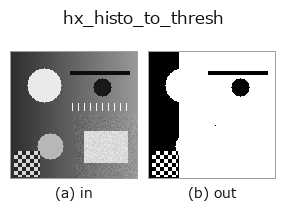

halcon_ext op• Data kinds: image → region
• Call: fullseye.apply(img, "hx_histo_to_thresh", a=0.5, b=0.5) (the 2-D model is one image plus two scalar knobs a,b∈[0,1])
• HALCON equivalent: histo_to_thresh (the HALCON reference is a useful guide to its meaning and parameters)

*The figure is the actual output on a synthetic 128×128 input. Left: input, right: output. Point clouds are drawn as a top-down scatter (brightness = z), 1-D series as a line plot, volumes as the maximum-intensity projection along z, videos as the middle frame, complex images as magnitude; return values that are not pictures are shown as the values themselves.*
*Knob a does not change the output (measured: identical at 0.1 / 0.5 / 0.9).*
*Knob b does not change the output (measured: identical at 0.1 / 0.5 / 0.9).*
On other images (synthetic scene / photo / coins. Top row: inputs, bottom row: their outputs. Knobs at default):
▸ hx_histo_to_thresh: other inputs (docs site)
*The 4th column is a colour (H,W,3) input. This op handles colour without crossing channels (it does not convolve the colour channel as a third spatial axis).*
Threshold from the valley of the histogram and binarise (valley detection, not Otsu's variance criterion — a different op).
Smooths the 64-bin histogram of v (range [0,1]) with a Gaussian of σ=1.5, takes the highest bin p1 and, among bins at least 5 bins away from p1, the next highest bin p2; the left-edge value of the minimum bin (valley) between them becomes the threshold thr, and a 0/1 float region with v > thr set to 1 is returned.
• a, b are unused (the threshold is fully automatic).
• If p2 cannot be found (no bin at least 5 bins away), lo == hi and the valley is fixed at bin 32, i.e.
thr = 0.5.
Caution: p2 is not "the 2nd mode" but "the 2nd highest bin at least 5 bins away from p1", so it is chosen even in the tail of a unimodal distribution. The valley is then the minimum between the peak and the tail, and the cut lands somewhere unintended (measured: in a unimodal Gaussian-noise image most of it becomes foreground). Meant for images with clear bimodality. To decide by a variance criterion, use otsu; for local thresholds, dyn_threshold.
• gallery2d_halcon_ext family guide
• Sample-data catalog (download URLs / licences) — 2-D uses skimage.data (BSD/public domain) plus synthetic images; 3-D lists download URLs for real data sources (Stanford, PDS, …).
• Operator provenance and references — the sources of the research/methods this op family came from.
• The canonical algorithm (author, year) and its uses are named in the family usage guide above.
The program below has been verified to run (same input as the figure). In Studio's help this block becomes buttons that load and run it on the spot.
hx_histo_to_thresh 0.50 0.50
▸ Load this pipeline · Load & run
• gallery2d_halcon_ext — py -3.11 examples/gallery2d_halcon_ext.py
region as input)identity · reg_erode · reg_dilate · reg_open · reg_close · fill_holes · select_largest · remove_small
halcon_ext)hx_gen_circle · hx_gen_ellipse · hx_gen_rectangle2 · hx_gen_checker_region · hx_gen_grid_region · hx_gabor · hx_fit_surface1 · hx_fit_surface2
*Provenance: ops.py — 2D operator registry. This per-op note is generated by tools/opdocs.py md (do not hand-edit).*
© 2026 Kazufumi Furuse — Fullseye operator documentation. Licensed under Apache-2.0.